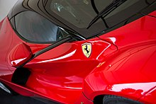

Welcome to the cars page
Where you can find information about your favorite cars.
Nissan GT-R

The Nissan GT-R is a high-performance sports car and grand tourer produced by Nissan that was unveiled in 2007. It is the successor to the Skyline GT-R, although no longer part of the Skyline range itself, that name now being used for Nissan's luxury-sport market.
The Nissan GT-R is powered by the VR38DETT V6 engine, a 3,799 cc (3.8 L; 231.8 cu in) DOHC V6 with plasma transferred wire arc sprayed cylinder bores. Two parallel Ishikawajima-Harima (IHI) turbochargers provide forced induction. Models manufactured between 2007 and 2009 are rated at a manufacturer-claimed engine output of 358 kW (487 PS; 480 hp) at 6,400 rpm and 583 N⋅m (430 lb⋅ft) at 3,200–5,200 rpm. The engine also meets California Air Resources Board Ultra Low Emission Vehicle (ULEV) standards.
It has a curb weight of 1,724 kg (3,800 lb) with side curtain airbags is achieved using a jig welded steel chassis with aluminium used for the hood, trunk, and doors. A rear mounted six-speed BorgWarner designed dual clutch semi-automatic transmission built by Aichi Machine Industry shifting gears in just 0.2 seconds is used in conjunction with the ATTESA E-TS system to provide power to all four wheels, along with Nissan's Vehicle Dynamics Control (VDC-R) to aid in stability. Three shift modes can also be selected for various conditions. The Nissan GT-R features four-wheel 15" floating disc Brembo brakes with monoblock calipers (six-piston on the front; four-piston on the rear).
Performance

Nissan states the GT-R can attain a top speed of 315 km/h (196 mph) and Motor Trend recorded a top speed of 313.8 km/h (195.0 mph). In tests the original production model was shown to be capable of achieving 0-97 km/h (60 mph) times as low as 3.2 seconds using "launch control". Owners expressed concern that duplicating the times achieved in these tests would void their factory warranty. Nissan's chief vehicle engineer Kazutoshi Mizuno has indicated that he has never used the term "launch control", which refers to the act of turning off vehicle dynamic control (VDC) and launching the car at around 4,500 rpm. However, Nissan's director of product planning John Wiener stated in an interview with Jay Leno that "we (Nissan) actually offer a 'launch mode'". The GT-R user's manual states that turning off the VDC is only meant for escaping low-traction situations such as mud or snow. Nissan has re-programmed the 2010 model year GT-R to reduce the engine speed at launch to around 3,000-3,500 rpm with VDC enabled, which is meant to improve acceleration times. The new programming was also installed on old 2009 vehicles still in Nissan's inventory, and is available for existing 2009 vehicles.
The updated GT-R now has a launch mode called "R-Mode Start". Pushing the three buttons up, includes the Transmission, Suspension and VDC the car gets to "R-Mode Start". The system allows a maximum of 4 consecutive hard launches before locking itself out, after which it can be unlocked by driving normally for 2.4 km (1.5 mi). The increased engine output of later models combined with the "R-Mode Start" has lowered the 0-97 km/h (60 mph) time to 3.2 seconds. Motor Trend achieved a standing quarter-mile time of 11.6 seconds at 190 km/h (120 mph) using a US-spec 2009 model year GT-R. Autocar achieved a 0-160 km/h (100 mph) time of 8.5 seconds.
The 2017 model year GT-R can accelerate to 97 km/h (60 mph) in the same time of 2.7 seconds and achieve a 400 m (1⁄4 mi) time of 10.7 seconds at 204 km/h (127 mph). In 2017, the German car magazine Auto Bild tested the top speed of the 2017 model year GT-R and reached a top speed of 328 km/h (204 mph).
EDITOR'S CHOICE
Ferrari LaFerrari

LaFerrari, project name F150 is a limited production hybrid sports car built by Italian automotive manufacturer Ferrari. LaFerrari means "The Ferrari" in Italian and some other Romance languages, in the sense that it is the "definitive" Ferrari.
As of 2020, the LaFerrari is the last Ferrari with a mid-mounted 12-cylinder engine.
Nine conceptual design studies were considered for the V12 hybrid flagship in 2011, reduced to five in April 2011 (three by Ferrari Centro Stile and two by Pininfarina). Of these, two full-size concepts were built: LaFerrari Concept Manta (internal designation: 2011 Model 2) and LaFerrari Concept Tensostruttura (internal designation 2011 Model 3). These were unveiled at the Ferrari Museum in Maranello, Italy and Ferrari World in Abu Dhabi. The final design of the LaFerrari is similar to the Manta concept (Model 2).
Specifications
LaFerrari is the first mild hybrid produced by the Italian automotive marque, providing the highest power output of any Ferrari road car whilst decreasing fuel consumption by 40 percent. LaFerrari's internal combustion petrol powerplant is a longitudinally rear mid-mounted Ferrari F140 direct fuel injected 65° V12 engine with a displacement of 6,262 cc (6.3 L) generating a maximum power output of 800 PS (588 kW; 789 hp) at 9,000 rpm and 700 N⋅m (516 lb⋅ft) of torque at 6,750 rpm, supplemented by a 163 PS (120 kW; 161 hp) KERS unit (called HY-KERS), which provides short bursts of extra power. The KERS system adds extra power to the combustion engine's power output level for a total of 963 PS (708 kW; 950 hp) and a combined torque of 900 N⋅m (664 lb⋅ft). Ferrari claims CO2 emissions of 330 g/km. The engine's bore X stroke is 94 mm × 75.2 mm (3.70 in × 2.96 in) with a compression ratio of 13.5:1 and a specific power output of 94 kW (128 PS) per litre. It is mated to a 7-speed dual-clutch transmission.
Performance
Ferrari states that the car has a top speed of 350 km/h (220 mph), similar to the Enzo's top speed. 0–100 km/h (0–62 mph) in under 3 seconds, 0–200 km/h (0–124 mph) in under 7 seconds, and 0–300 km/h (0–186 mph) in 15 seconds were announced by Ferrari. Ferrari also claims that the car has lapped its Fiorano Test Circuit in 1:19.70.
FASTEST ELECTRIC CAR
Genovation GXE

A new top speed world record has been achieved in whisper silence. That's because it was set by the Genovation GXE, an all-electric 800-plus-horsepower sports car based on the C7 Corvette.
The car re-set its record for the world's fastest street-legal all-electric car, posting a top speed of 210.2 mph, which tops its previous mark of 209 mph. The run was completed on the three-mile runway at the Kennedy Space Center in Florida, with renowned top-speed test driver Johnny Bohmer at the wheel. Unlike other recent top-speed runs that went officially unverified, Genovation brought the International Mile Racing Association to record, witness, and certify its achievement.
Eking out that extra click on the speedometer required some notable changes. To reduce drag, the giant rear wing was swapped with a lower-profile spoiler, a smoother aero element took the place of the chin splitter, and the diffuser vanes were cut at a steeper angle. The rake was altered and suspension springs stiffened to prevent the front of the car from dropping too far as speeds increased. Power was increased by an undisclosed amount.A new top speed world record has been achieved in whisper silence. That's because it was set by the Genovation GXE, an all-electric 800-plus-horsepower sports car based on the C7 Corvette.
 The car re-set its record for the world's fastest street-legal all-electric car, posting a top speed of 210.2 mph, which tops its previous mark of 209 mph. The run was completed on the three-mile runway at the Kennedy Space Center in Florida, with renowned top-speed test driver Johnny Bohmer at the wheel. Unlike other recent top-speed runs that went officially unverified, Genovation brought the International Mile Racing Association to record, witness, and certify its achievement.
The car re-set its record for the world's fastest street-legal all-electric car, posting a top speed of 210.2 mph, which tops its previous mark of 209 mph. The run was completed on the three-mile runway at the Kennedy Space Center in Florida, with renowned top-speed test driver Johnny Bohmer at the wheel. Unlike other recent top-speed runs that went officially unverified, Genovation brought the International Mile Racing Association to record, witness, and certify its achievement.
Eking out that extra click on the speedometer required some notable changes. To reduce drag, the giant rear wing was swapped with a lower-profile spoiler, a smoother aero element took the place of the chin splitter, and the diffuser vanes were cut at a steeper angle. The rake was altered and suspension springs stiffened to prevent the front of the car from dropping too far as speeds increased. Power was increased by an undisclosed amount.
FASTEST production CAR
Koenigsegg Agera RS

The Koenigsegg Agera RS is currently the world’s fastest production car, with an officially recognised top speed of 277.9mph. The record was set in 2017, breaking the previous record of 267.9mph, which was held by the Bugatti Veyron Super Sport since 2010. Bugatti managed to break the 300mph barrier with a modified Chiron in 2019 with a run of 304.774mph, but the car is not yet production ready. There's also new competition for top spot in the form of the American-made Hennessey Venom F5 and SSC Tuatara.
Engineers and racing drivers have targeted automotive speed records for many years and there are none bigger than the one that bestows the title of ‘fastest car in the world’. In the past, manufacturers which claimed to have the fastest production car in the world would also lay claim to the outright Land Speed Record. However, by the mid-20th Century, the two lists of record holders diverged as land speed record cars started to look like road-going rockets while production cars had to accommodate the need for passengers, luggage and a realistic price tag.
 As technology advanced and vehicle ranges broadened, the pursuit of the world’s fastest production car title intensified. Early contenders include Mercedes and Jaguar, while Porsche and Ferrari have had an intra-brand rivalry lasting more than 50 years, interspersed with offerings from the usurper, Lamborghini.
As technology advanced and vehicle ranges broadened, the pursuit of the world’s fastest production car title intensified. Early contenders include Mercedes and Jaguar, while Porsche and Ferrari have had an intra-brand rivalry lasting more than 50 years, interspersed with offerings from the usurper, Lamborghini.
In recent years, we’ve seen McLaren and Bugatti both stake a claim, while a number of niche hypercar manufacturers also continue to hunt for the production car record. Small scale competitors often make bold claims of record attempts to squeeze deposits out of wouldbe buyers but for every Devel Sixteen and 2,500bhp Dagger GT, there’s an SSC Ultimate Aero or a Hennessy Venom GT - cars that have put their money where their mouth is.
 While it took seven years for the Agera RS to claim the Veyron Super Sport’s title, it’s unlikely to hold onto it for long as a number of cars, including the 1,578bhp Koenigsegg Jesko, the all-new 1,600bhp Hennessey Venom F5 and the 1,500bhp Bugatti Chiron are shooting for the 300mph barrier. The latter actually broke it with a 304.774mph run at the Ehra-Lessien test track in Germany in 2019, unfortunately the car will go into production in 2021 with a price-tag of around £3.1 million so it sadly doesn't count, for now.
While it took seven years for the Agera RS to claim the Veyron Super Sport’s title, it’s unlikely to hold onto it for long as a number of cars, including the 1,578bhp Koenigsegg Jesko, the all-new 1,600bhp Hennessey Venom F5 and the 1,500bhp Bugatti Chiron are shooting for the 300mph barrier. The latter actually broke it with a 304.774mph run at the Ehra-Lessien test track in Germany in 2019, unfortunately the car will go into production in 2021 with a price-tag of around £3.1 million so it sadly doesn't count, for now.
Currently, tyres are the major limiting factor for production car top speed attempts, with Bugatti being forced to electronically limit the top speed of the Chiron to “just” 261mph for fear of a high-speed blow-out. However, technology has improved over the last five years, and Michelin is said to be developing rubber which can cope with 300mph-plus speeds.
About Us
Welcome to the cars page. Where you can find all the information about your favorite cars. In here you will find information about the Specifications and performance of cars such as:
Nissan GTR
Ferrari LaFerrari
And many more. Stay tuned for regular updates on the webpage.
PEACE OUT
Contact us
Contacts
Want to Join Us? Send your Data here and we Will let you Join our Team
Made with love by matudares
Like what you see? Follow me on my social media:


Welcome to the cars page. Where you can find all the information about your favorite cars. In here you will find information about the Specifications and performance of cars such as:
Nissan GTR
Ferrari LaFerrari
And many more. Stay tuned for regular updates on the webpage.
PEACE OUT
Contacts
Want to Join Us? Send your Data here and we Will let you Join our Team
Made with love by matudares
Like what you see? Follow me on my social media: